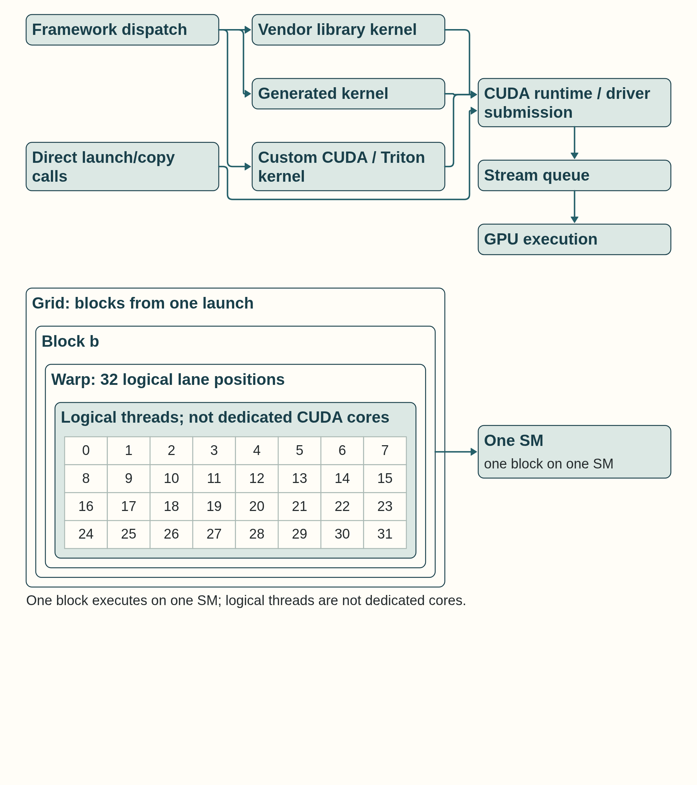
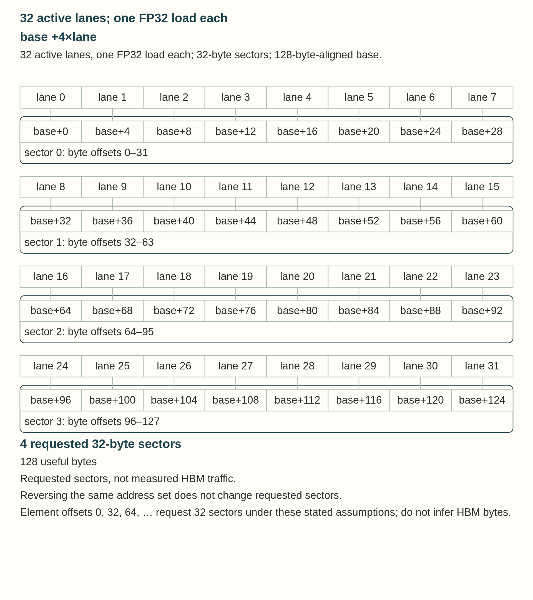

4 CUDA execution and data movement
Compute Unified Device Architecture (CUDA) is the programming model and platform beneath most NVIDIA GPU deep learning work. A Python program may call PyTorch, which selects a vendor, generated, or framework kernel and submits it through CUDA runtime or driver APIs. The GPU executes submitted work over grids, blocks, threads, and warps. Section 4.2 develops that hierarchy, and Section 4.3 follows the memory and copies used by the work.
One PyTorch statement such as logits = model(input_ids) can submit many kernels during a forward pass. Their number and size depend on the model, input shapes, and backend. A one-token decode step can also consist of many small operations. Chapter 8 later explains how supported compilation, fusion, and CUDA Graph replay change the work or its submission once ordinary launches and stream ordering are clear.
The layer map below identifies which software chooses the operation, which layer submits it, and which device resources execute it. One layer can change the work seen by another, so these roles are not exclusive.
Model and application calls enter PyTorch, which manages tensor metadata, device placement, and dispatch. A compiler or library supplies kernels, and the CUDA runtime submits launches and copies for GPU execution. Serving software schedules requests and manages KV state. Distributed software coordinates communication among ranks. A change at one layer can alter work measured at later layers.
- Model and application layer: Defines model calls, input preparation, generation behavior, and the performance question being measured.
- PyTorch framework layer: Stores tensor metadata and provides autograd, device placement, dispatch, the caching allocator, and framework-level measurement interfaces.
- Compiler and kernel layer: Turns operations into vendor, generated, Triton, or CUDA kernels and controls the layout, tiling, fusion, and load/store behavior of hot GPU work.
- CUDA runtime and library layer: Provides device contexts, streams, events, copies, launch ordering, and access to vendor libraries such as cuBLAS or cuDNN.
- Serving and distributed layer: Schedules request admission and KV-cache use, and coordinates process groups, collective requests, and rank placement around one model execution path.
The word “local” can describe where state is stored or which process owns it. HBM, for example, is GPU-attached device memory: close to the GPU but not on-chip storage. The remaining chapters use four scopes:
- On-chip: Registers and shared memory inside one SM, plus the device-wide L2 cache on the GPU die.
- Same-GPU: L2 cache and HBM, visible to every SM on the device. L2 is also on-chip, while HBM is off-chip.
- Same-server: GPUs and host memory joined by intra-node links such as PCIe or NVLink.
- Process- or rank-local: Software ownership: which process or distributed rank holds and manages the object.
A framework dispatches a vendor-library operation or a custom kernel. The library or launcher uses CUDA runtime or driver APIs to submit the resulting GPU work to a stream queue.

The dispatch path separates host selection and CUDA submission from GPU execution. The hierarchy distinguishes logical grids, blocks, warps and threads from the SM that executes a block. The copy and stream paths show transfer completion and an explicit producer-to-consumer dependency. The address example connects one warp’s requested addresses to sectors.
The short lever key applies here: fewer or cheaper launches cut fixed overhead; coalesced access moves fewer bytes for the same useful data; streams can keep hardware busy when independent work and available resources permit overlap.
4.1 CUDA runtime and vendor libraries
The CUDA software layer provides APIs between framework code and NVIDIA GPU execution. Every kernel launch, explicit copy, stream dependency, event, and vendor-library call passes through the runtime or driver path.
Runtime and device context: The runtime submits host API requests, the driver loads and launches executable GPU code, and the device context holds process-visible execution state. Their versions and context state determine whether compiled kernels and libraries can execute on the selected GPU.
- CUDA runtime: The host API for selecting devices, allocating memory, launching kernels, creating streams and events, copying memory, and synchronizing work.
- CUDA driver: The lower-level interface that loads executable GPU code, manages device interaction, and links runtime requests to GPU execution through the installed operating-system GPU driver.
- Device context: The process-visible execution state for a GPU, including loaded modules, allocations, streams, and runtime resources.
- Framework interface: PyTorch exposes device placement, streams, events, synchronization, allocator statistics, and CUDA Graph entry points through
torch.cuda. A CUDA Graph records GPU work for later replay. The framework still defines tensor behavior and dispatch policy.
CUDA Graphs also use this submission layer, but Chapter 8 gives their full warmup, capture, replay, and graph-break sequence after ordinary launches are defined.
Vendor kernel libraries: Vendor libraries supply prebuilt optimized kernels behind stable APIs. The application or framework launches these operations over GPU tensors instead of editing the underlying kernel source.
cuBLASandcuBLASLt: NVIDIA matrix and linear-algebra libraries. Transformer projections commonly reach their tensor-core GEMM implementations when dimensions, dtype, layout, and alignment are supported.cuDNN: NVIDIA neural-network operator library, especially important for convolution-oriented workloads and other supported primitives.- Vendor library kernel: A compiled GPU implementation selected through a library API. It provides the baseline that a custom CUDA or Triton kernel should beat on the measured workload.
- Communication library: NVIDIA Collective Communications Library (NCCL) is also a vendor library, but its collectives require processes, ranks, process groups, and physical fabrics. Chapter 16 and Chapter 17 develop that communication stack.
Vendor libraries are the default when a supported operation already has a tuned kernel. Custom code is justified only after that baseline is measured on the real shapes and data type. The next question is how CUDA divides any selected kernel into grids, blocks, warps, and threads when it executes.
4.2 CUDA execution hierarchy
CUDA execution objects appear in the order a program encounters them. The host is the CPU-side program. The device is the GPU. A kernel is launched from the host onto the device, and the launch creates a grid of blocks, each containing threads grouped for scheduling into warps.
The hierarchy is logical, not a permanent one-to-one wiring to physical units. One kernel launch creates a grid. The grid contains blocks. An available Streaming Multiprocessor (SM) admits a block when resources permit. Warp schedulers issue active lanes from the block’s warps. A thread is one logical lane rather than a CUDA core reserved for that thread.
- Host: The CPU-side program that allocates tensors, launches kernels, schedules framework work, and may synchronize with the GPU. Python code normally runs on the host even when tensors live on the device.
- Device: The GPU selected for execution. A process may see multiple devices, but each device has its own SMs, HBM, streams, and allocator state.
- Kernel: The GPU function introduced in Section 1.2 and grouped into blocks and warps in Section 3.1. A
PyTorchoperation can launch one kernel, many kernels, or a fused/generated kernel depending on the backend path. - Grid: The complete set of blocks created by one kernel launch. Grid dimensions describe how much independent block-level work is exposed.
- Block / CTA: The cooperating thread group introduced in Section 3.1. On NVIDIA GPUs, a block is assigned to one SM for execution. A single block does not span multiple SMs.
- Thread: The logical scalar worker that has registers and computes one or more data elements according to the kernel’s index mapping.
- Warp: The 32-thread scheduling group introduced in Section 3.1. Warps explain why adjacent lane access, branch divergence, and coalescing matter.
These objects describe where CUDA work is placed. The next terms describe how efficiently resident warps use execution lanes and hide long-latency operations.
- Warp divergence: A warp diverges when lanes in the same warp must follow different control-flow paths. The hardware serializes the paths under masks, so useful lane utilization drops even though the kernel is logically correct.
- Predication: A compiler or hardware technique that can execute short conditional work under lane masks instead of taking a full branch. It can reduce branch overhead, but both paths may still consume instructions.
- Occupancy: As defined in Section 3.1, the ratio of active resident warps on an SM to the maximum possible resident warps. It is useful because other warps can run while one warp waits on memory, but high occupancy is not the same as high throughput.
- Latency hiding: The SM scheduler keeps execution units busy by switching to ready warps when one warp stalls on HBM, dependencies, or synchronization. If too few warps are resident, long HBM latency becomes visible as idle cycles.
Warp scheduling is the SM-level answer to HBM latency. A global-memory load can take far longer than an arithmetic instruction, so the SM relies on many resident warps to cover the wait. Register pressure, shared-memory use, large blocks, and launch shape can reduce resident warps. When too few warps are ready, a long memory wait becomes visible as idle execution time; more resident warps alone do not guarantee fast work if their accesses or dependencies are poor.
Distinguishing execution limits
Divergence reduces useful lanes inside a warp. Low occupancy leaves too little ready work to cover latency. Poor coalescing expands the memory transactions needed for a warp’s data. These effects can occur together, but each changes execution in a different way.
This execution model assumes that tensors are available to the device. The next question is how memory is allocated and how bytes reach the kernel.
4.3 CUDA memory allocation and movement
A program can be mathematically correct and still slow or unstable because it allocates unpredictably, fragments memory, or synchronizes copies.
Host-device and peer-transfer ownership: Explicit transfers are initiated by framework placement calls or CUDA runtime APIs and executed over the path available between the source and destination. The list identifies the objects and hardware conditions that govern those transfers.
A host-device or peer transfer needs a source, destination, available hardware path, and ordered execution. Pinned host memory and streams can support asynchronous copies, but actual overlap depends on dependencies and hardware support.
- Pinned host memory: Defined in Section 3.5. It is commonly used by DataLoaders and asynchronous copies, but pinning too much host memory leaves the operating system less it can move or page out.
- Asynchronous copy and streams: A copy can overlap with compute only when the copy is issued asynchronously, the host memory path supports it, and stream dependencies do not serialize the work. A later synchronization can still expose the full cost.
cudaMemcpy: The CUDA runtime copy operation used to move bytes between host and device or between devices. InPyTorchthis is usually hidden behind.to(device),.cuda(),.cpu(), or tensor copy calls.- Direct Memory Access (DMA): Defined in Section 3.5. Pinned host memory is what makes a DMA-based GPU transfer possible without an intermediate copy, and the transfer still consumes interconnect bandwidth.
- PCIe transfer: Host-device or some device-device traffic over the PCIe bus. Its bandwidth is far below HBM, so repeated round trips should be avoided.
- Peer transfer: A GPU-to-GPU copy that can avoid host staging when peer access, topology, and the runtime configuration permit a direct path.
- Mapped host memory: Lets a GPU kernel access a host allocation through the system interconnect, which can be useful for small or irregular control data and slow for bulk tensor traffic.
- Managed memory: Can migrate or prefetch pages between processors.
cudaMemAdviseandcudaMemPrefetchAsyncguide residency, while ordinary L1 and L2 cache behavior remains hardware-managed.
A low-level CUDA lifecycle makes the hidden costs visible: allocate device memory, copy inputs from host to device, launch the kernel, synchronize only when required, copy results back if the host needs them, and free or reuse device memory. PyTorch hides most of these calls, but the performance costs remain.
A stream is an ordered queue of submitted CUDA operations. Putting the copies and kernel in the same stream makes the kernel wait for its inputs and makes the output copy wait for the kernel. Synchronizing that stream then lets the CPU safely use the copied result.
This CUDA C++ sketch shows allocation, copies, a kernel launch, stream ordering, synchronization, and cleanup. It requires nvcc and a CUDA-capable GPU. It omits input initialization, result checks, and CUDA error handling, so a runnable test must add those steps.
Example: Host-device copy lifecycle
Illustrative CUDA C++ lifecycle. Requires nvcc and a CUDA-capable GPU. The listing emphasizes allocation, stream ordering, copies, launch, synchronization, and cleanup. It omits input initialization, result checking, and CUDA error handling, so it is not a complete runnable test. A runnable version includes initialization for h_x and h_y, checks every CUDA call and the launch, verifies selected h_out values after synchronization, and reports the build command and expected result.
__global__ declares add as a GPU kernel entry point. In add<<<(n + 255) / 256, 256, 0, stream>>>(d_x, d_y, d_out, n), the four launch slots give the number of blocks, threads per block, dynamic shared-memory bytes per block, and the stream receiving the launch. Here no dynamic shared memory is requested. The ordinary arguments are pointers to the two device input buffers, the device output buffer, and their element count. Integer division in (n + 255) / 256 rounds the positive length up to enough 256-thread blocks. For n=300, two blocks expose 512 indices. The i < n guard prevents indices 300 through 511 from accessing the arrays. The actual listing uses n=1 << 20, which divides evenly. The fourth slot selects the same queue as the surrounding copies, establishing their required order.1
Code example: Host-device copy lifecycle
#include <cuda_runtime.h>
__global__ void add(const float* x, const float* y, float* out, int n) {
int i = blockIdx.x * blockDim.x + threadIdx.x;
if (i < n) out[i] = x[i] + y[i];
}
int main() {
const int n = 1 << 20;
const size_t bytes = n * sizeof(float);
float *h_x, *h_y, *h_out, *d_x, *d_y, *d_out;
cudaStream_t stream;
cudaMallocHost(&h_x, bytes); // page-locked host buffers
cudaMallocHost(&h_y, bytes);
cudaMallocHost(&h_out, bytes);
cudaMalloc(reinterpret_cast<void**>(&d_x), bytes);
cudaMalloc(reinterpret_cast<void**>(&d_y), bytes);
cudaMalloc(reinterpret_cast<void**>(&d_out), bytes);
cudaStreamCreate(&stream);
cudaMemcpyAsync(d_x, h_x, bytes, cudaMemcpyHostToDevice, stream);
cudaMemcpyAsync(d_y, h_y, bytes, cudaMemcpyHostToDevice, stream);
add<<<(n + 255) / 256, 256, 0, stream>>>(d_x, d_y, d_out, n);
cudaMemcpyAsync(h_out, d_out, bytes, cudaMemcpyDeviceToHost, stream);
cudaStreamSynchronize(stream);
cudaStreamDestroy(stream);
cudaFree(d_x); cudaFree(d_y); cudaFree(d_out);
cudaFreeHost(h_x); cudaFreeHost(h_y); cudaFreeHost(h_out);
}Conclusion: A pageable host source may require a page-locked staging copy. A pinned source can avoid that step and support asynchronous DMA. The copies and kernel here share one stream, so each operation waits for the data it needs. After stream synchronization returns, the queued work has completed and the host can inspect the output. Asynchronous submission alone does not show overlap with independent work.
Example: Pinned host copy and consumer
Running this example requires an NVIDIA GPU and a CUDA-enabled PyTorch installation. The small transfer trace starts with four CPU values, pins their storage, requests a non-blocking copy to CUDA, and multiplies the copied values on the current stream. The same stream orders the dependent multiply after the copy. Synchronization waits for the result before the host checks it. The code demonstrates the copy and its dependency; it does not establish copy/compute overlap, which needs independent work, suitable streams and hardware, and timeline evidence.
Code example: Pinned host copy and consumer
import torch
host = torch.arange(4, dtype=torch.float32).pin_memory()
device = host.to("cuda", non_blocking=True)
result = device * 2 # Same current stream, after the copy.
torch.cuda.synchronize() # Wait before the host checks the result.
assert torch.equal(result.cpu(), torch.tensor([0., 2., 4., 6.]))
print(result.cpu().tolist())Conclusion: The copied values are correct after the synchronized, same-stream consumer finishes. An asynchronous copy hides transfer time only when pinned memory, stream order, hardware, and independent compute permit real overlap. non_blocking=True alone is not evidence. Once the bytes arrive, the next question is how allocator reuse, fragmentation, and runtime controls affect the device memory available to later kernels.
Allocator and runtime memory controls: Allocation state determines whether the next tensor or workspace can be placed without an expensive driver request or an out-of-memory failure. Runtime controls can influence reuse and cache policy, while hardware still decides exact replacement and residency.
- Device tensor: A tensor whose storage is allocated in GPU memory and whose operations normally execute on that GPU. The Python object is host-side metadata. The tensor data pointer refers to device memory.
- Caching allocator:
PyTorch’s CUDA allocator reserves blocks from the CUDA driver and reuses them for later tensor allocations, reducing repeated driver allocation calls. - Allocated versus reserved: Allocated memory is storage currently used by live tensors. Reserved memory is the total pool held by the allocator, including those live allocations and inactive cached blocks. The two measurements are not separate amounts to add together. Unused pool capacity is only part of reserved memory.
- Fragmentation: Free capacity divided into blocks that cannot satisfy the next allocation shape. Dynamic sequence lengths, workspaces, and long-running serving admission can make it visible.
- L2 persisting access window: A CUDA stream or graph setting that marks a global-memory range for preferred L2 retention within hardware and set-aside limits.
The following controls influence resource preference or retention. They guide supported hardware behavior. Ordinary application code still cannot assign a tensor to a chosen cache set or permanently lock arbitrary cache lines.
| Runtime control | Owner | Useful influence | Limits |
|---|---|---|---|
| Shared-memory/L1 preference | CUDA runtime or kernel attribute | Can prefer a supported L1/shared-memory split | Does not guarantee exact capacity or residency |
| L2 persisting window | CUDA stream or graph kernel-node attribute | Can prefer retention for a global-memory range | Cannot exceed set-aside capacity or pin arbitrary lines |
| Allocator configuration | PyTorch CUDA allocator | Can change block splitting, reuse, and reclamation behavior | Cannot reduce the workload’s true live tensor footprint |
Allocator settings can change block reuse and fragmentation, while cache controls can influence retention, but neither reduces the workload’s true live memory or guarantees residency. The next question is how streams and events order allocations, copies, and kernels without adding unnecessary waits.
4.4 Asynchronous execution and synchronization
A stream orders the operations submitted to it: a kernel begins only after earlier copies and kernels in that same stream. Different streams do not automatically establish an order merely because one operation reads data written by another. A producer can record an event after its copy or kernel, and a consumer stream can wait on that event before reading the produced data. Without that dependency, the consumer can race the producer. These ordering, pinned-memory, and overlap rules follow the CUDA C++ Programming Guide 12.4.2
![Pageable input may be copied to pinned staging. Input that is already pinned skips that copy. A copy engine transfers the data to GPU input storage over an available link, such as PCIe. Kernel output can be copied back to a host result buffer. The host waits for completion before using the result. Stream 0 orders host-to-device (H2D) copy A, Kernel A, event E, Kernel B and device-to-host (D2H) copy A. Stream 1 orders H2D copy B, Wait E, Kernel C and D2H copy B. Wait E makes stream 1 wait for event E before Kernel C reads A’s result. A shared pointer alone establishes neither cross-stream order nor storage lifetime.](../assets/fig-m4-c03-copy-order.png)
Correctly ordered operations in different streams are eligible to overlap when they are independent and the device has the required copy or compute resources. The host-device copy lifecycle and pinned batch transfer in Section 4.3 illustrate same-stream order and the conditions for overlap. Independently ordered streams need a deliberate dependency before one consumes another’s output, for example an event and wait or PyTorch’s wait_stream. CUDA’s legacy default stream can add implicit ordering with blocking streams, and host synchronization can also establish order. A shared data pointer alone creates no dependency.
Execution order and storage lifetime are separate requirements. Input and output storage must remain available until asynchronous work finishes. For an allocator-managed PyTorch tensor used on another stream, tensor.record_stream(consumer_stream) tells the allocator about that use so it does not reuse the storage too soon. Another option is to retain the tensor and join or synchronize the consumer before releasing its storage. Neither option replaces the producer-to-consumer dependency: wait_stream orders the work, while the lifetime rule protects the memory it uses.3
GPU elapsed-time measurement records start and end events in the measured stream and synchronizes the end event before reading the duration. A device- or stream-wide synchronization is appropriate only when its full wait scope is required, because a broader wait can remove useful overlap and make a host timer include work outside the intended region.
4.5 Thread mapping and grid-stride launch
Section 4.2 defined the grid, block, and thread. To map that hierarchy onto a one-dimensional tensor, thread t in block b starts at i = b * blockDim.x + t, where blockDim.x is threads per block and gridDim.x is blocks per grid. If the grid contains fewer threads than elements, the thread advances by blockDim.x * gridDim.x and processes i + stride, i + 2 * stride, and so on. Adjacent threads then access adjacent elements when the array is contiguous, which gives the memory system an opportunity to coalesce their requests. If lanes diverge into different branches or scattered addresses, the same mathematical operation may require many more memory transactions.
The mapping also controls work balance. Uneven work can leave lanes idle and delay warp or block completion. Threads wait for each other at required synchronization points. Ordinary work does not imply a block-wide barrier, and warp scheduling depends on the GPU’s execution model. If the launch exposes too little parallel work, SMs remain idle even when the kernel code is correct.
This CUDA-like pseudocode connects one-dimensional tensor indexing to a launch configuration. It shows block and thread indices, a grid-stride loop, and the access pattern needed for coalescing. Allocation, data transfer, synchronization, and cleanup are outside this example.
Example: Grid-stride vector add
Assume contiguous inputs x=[0,1,2,3,4,5,6,7,8,9] and y=[10,10,10,10,10,10,10,10,10,10], with space for ten output elements. The example deliberately launches grid=2, block_size=4, so eight logical threads cover n=10 elements with stride \(2\times4=8\).
Block 0, thread 0 starts at index 0 and writes out[0]=0+10=10. Its second loop iteration visits index \(0+8=8\) and writes out[8]=8+10=18. Its next candidate, 16, is outside the input, so the loop stops. Block 0, thread 1 visits indices 1 and 9 and writes 11 and 19. Global thread IDs 2 through 7 each visit their first index only, writing 12 through 17, because their next indices are at least 10. The complete result is [10,11,12,13,14,15,16,17,18,19], with every element written once.
The alternative full-coverage launch, grid=ceil(n/block_size)=3, exposes twelve threads and stride 12. It gives each valid thread one element, while IDs 10 and 11 do no work. In both launches, the stride counts all logically launched threads, not just those simultaneously resident on SMs. Hardware may schedule the blocks at different times without changing this coverage.
Code example: Grid-stride vector add
kernel vector_add(x, y, out, n):
tid = blockIdx.x * blockDim.x + threadIdx.x
stride = blockDim.x * gridDim.x
for i in range(tid, n, stride):
out[i] = x[i] + y[i]
n = 10
block_size = 4
launch grid = 2, block = block_size
# Alternative full coverage: grid = ceil(n / block_size)Conclusion: Thread mapping, address order, and grid-stride coverage shape coalescing and work balance. For transfer, synchronization, and cleanup costs, see the copy examples in Section 4.3 and the ordering rules in Section 4.4. Triton keeps the mapping concerns but expresses them through program instances, tiles, offsets, masks, and compiler-selected lower-level execution.
4.6 Memory coalescing and cache controls
Memory coalescing combines the participating lanes’ addresses for one warp memory instruction into aligned transactions or sectors. Neighboring lanes reading neighboring addresses are a common efficient pattern, but the set of addresses matters, not their lane order. This controls the requested memory traffic. Caches can satisfy requests, so the sector count does not by itself give HBM bytes.
GPU memory is served in cache-line and sector-sized transactions rather than one independently sized transfer per scalar address. When neighboring lanes request nearby addresses, one transaction can supply many useful values. When lanes request scattered addresses, the hardware fetches the sectors or cache lines containing those addresses. If each lane uses only one value from a different line, most fetched bytes are unused. The operation then spends bandwidth on transactions that carry little useful data.
Exact transaction sizes depend on architecture, element width, alignment, and which lanes are active.
Example: Lane order and requested sectors
Inputs: Assume 32 active lanes, one FP32 load per lane, a 32-byte sector, and a base address aligned to 128 bytes. The lanes need 128 useful bytes in total.

Address sets: Reading array elements 0 through 31 in lane order requests four sectors. Reversing that order requests the same four sectors. Reading elements 0, 32, 64, and so on instead places each lane in a different sector, requesting 32 sectors for the same 128 useful bytes.
Conclusion: Reversing lane order does not spoil this coalesced address set. The strided set requests 1,024 sector bytes for 128 useful bytes before considering cache hits. These are requested sectors, not a measurement of HBM traffic.
Shared memory has a different access problem. It is divided into banks so lanes in a warp can read or write multiple addresses in parallel. A bank conflict occurs when multiple lanes request different addresses that map to the same bank in the same instruction. The access is split into multiple transactions. Broadcast-like same-address cases are handled specially, so shared-memory layout and padding should spread lanes across banks when they need different words.
Kernel code and compiler backends can also express cache-use intent. These controls are useful only after measurement shows that reuse, sector traffic, or shared-memory capacity is part of the bottleneck.
| Kernel control | Where it is expressed | What it influences | What to verify |
|---|---|---|---|
| PTX cache operators | Generated PTX or custom kernel code | Load/store intent such as cache-all, L2-only, or streaming behavior | Sector traffic, hit behavior, and portability across architectures |
| PTX eviction and prefetch hints | Generated PTX, compiler, or custom code | Replacement or prefetch preference where supported | Measured reuse and working-set size |
| Shared-memory tiling | CUDA C++, Triton, or compiler-generated kernel | Programmer-controlled staging and reuse near the SM | Bank conflicts, synchronization, occupancy, and actual reuse |
4.7 Matrix operations in vendor libraries
Matrix operations show how framework calls, vendor libraries, and custom kernels meet. PyTorch commonly dispatches supported matrix multiplication to cuBLAS or cuBLASLt. Custom CUDA or Triton code is justified when the measured dimensions, layout, fusion needs, or epilogue (processing applied to the matrix result, such as adding a bias) are poorly served by that baseline. cuBLAS provides the BLAS implementation on the CUDA runtime documented in the cuBLAS Library4, and NVIDIA’s matrix-multiplication guidance treats matrix-vector products in its FP16 traffic model as memory limited with arithmetic intensity below 15.
General Matrix-Matrix Multiplication (GEMM) multiplies two matrices. In mathematical notation, the operation is:
\[ C = A B \tag{4.1}\]
Here A has shape M by K and can represent one layer’s weight matrix. B has shape K by N and holds N compatible token vectors as columns; C has shape M by N. The same projection over a 2,048-token batch can multiply those vectors by one 4,096 by 4,096 weight matrix, exposing reuse of its weight tiles. A row-major framework call may transpose this written orientation without changing the operation. The notation omits layout, precision, tiling, and whether Tensor Cores are actually used.
General Matrix-Vector Multiplication (GEMV) multiplies a matrix by a vector:
\[ y = A x \tag{4.2}\]
Here the same A has shape M by K, x is one vector of length K, and y has length M. This is the N=1 case of the projection above. One active token vector in a decode projection can use this form; a few compatible active vectors form a matrix mathematically but still offer little weight reuse. Production code may batch or reshape them and select a matrix-multiply kernel. For one 4,096-element vector and a 4,096 by 4,096 weight matrix, the projection reads many weights for one output vector, subject to cache and kernel behavior.
The difference is how many vector columns reuse each loaded weight tile. Training or prefill usually supplies many compatible vectors, and batched decode can also do so. With one or a few vectors, arithmetic per loaded weight is lower and the projection can be GEMV-like in cost. GEMV-like describes possible performance, not the kernel that production code must launch: shape, dtype, batching, fusion, cache residency, and the selected backend determine the measured result. Table 4.3 compares the two input counts. Section 6.2 works through the arithmetic and byte estimates for the same projection across batch sizes.
| Operation | Mathematical form | Projection input count | Conditional performance character |
|---|---|---|---|
| GEMM | C = AB | Many compatible token vectors in training, prefill or batched decode | Weight reuse can raise arithmetic intensity and Tensor Core use when shape, dtype and kernel fit |
| GEMV | y = Ax | One token vector, such as a single active decode position | Little within-call weight reuse; often bandwidth-sensitive when weights must come from HBM |
The reported GEMV timings compare PyTorch/cuBLAS with five custom CUDA iterations, in milliseconds. They record one measured implementation sequence, not a generic ranking of every possible GEMV kernel.
In a simple one-vector projection, each loaded weight supports one multiply-add within that call. If the weights must come from HBM, low arithmetic intensity can make the call bandwidth-sensitive. Several vectors can reuse a loaded weight tile. Actual HBM traffic depends on cache residency, layout, batching, and the selected kernel, so this comparison alone does not diagnose a measured call.
The reported values are 0.0594 ms for PyTorch/cuBLAS and 0.60, 0.276, 0.464, 0.0789, and 0.0593 ms for iterations 1 through 5. These are observations from one experiment. The supplied slides describe an 8,192 by 4,096 matrix and a 4,096-element vector on one H100, and their CUDA screenshots use FP32 pointers.6 They do not supply a complete executable benchmark, software versions, warmup, timing boundary, or correctness tolerance. Those missing settings prevent reproduction or a portable performance ranking. No uncertainty estimate is supplied, so 0.0593 versus 0.0594 ms does not establish a reliable advantage over cuBLAS.
The iteration labels suggest different ways to read a row and combine partial sums. The mechanisms below explain those designs. The reported times alone do not verify the implementation details or their costs. A fresh comparison would need the same shape, dtype, GPU, warmup, timing boundary, and correctness tolerance for every implementation.
A shuffle transfers a register value from one participating warp lane to another. It can combine partial sums within a warp.7
- Iteration 1 (Naive): A one-thread-per-output design loops over the columns of each row of A. With row-major storage, adjacent threads reading the same column in different rows use addresses separated by the row width, which can require more memory transactions. The exact cost depends on layout and shape.
- Iteration 2 (Transposed): The slides store the transposed matrix and read
A_T[i*M+row]. At a fixed columni, consecutive row-owning threads read consecutive FP32 elements. This can improve coalescing compared with row-strided reads. A fresh comparison must state whether producing the transposed storage is inside or outside the measured workload; the reported time alone does not isolate that cost. - Iteration 3 (Shared vector tiles): The slides stage chunks of
xin shared memory for reuse by row-owning threads, with block barriers around each tile. Its reported 0.464 ms exceeds iteration 2’s 0.276 ms. The illustration does not divide each row among threads for a block reduction; that begins in iteration 4. Cache behavior, barrier waits, address arithmetic, and occupancy are hypotheses to test with a runnable benchmark and counters, rather than causes established by these timings. - Iteration 4 (Cooperating Threads): A row is divided across many threads and reduced at block scope. The useful thread count depends on row width, dtype, occupancy, and synchronization cost.
- Iteration 5 (Warp per Row / Warp-Shuffle): One warp can cooperate on a row and reduce partial sums with register shuffles, avoiding block-wide barriers for that reduction. Whether it approaches cuBLAS depends on the measured shape, dtype, GPU, and timing method.
Distinguishing those hypotheses requires the original kernels and measurements: shared-memory conflict counters, barrier-stall evidence, instruction counts, and register/shared-memory limits would test different possible causes. Those records are not supplied with the table. The optional warp-shuffle calculation below shows how cooperating lanes combine one row’s products. It is an arithmetic trace, not a reconstruction or benchmark of iteration 5.
Example: Combining a row across warp lanes
Take one matrix row [1,2,3,4] and vector [2,3,4,5]. Their dot product is \(1\times2+2\times3+3\times4+4\times5=40\). Assign the four products to lanes 0 through 3 of one 32-lane warp. Their register partial sums are [2,6,12,20]. Lanes 4 through 31 hold zero and remain active. For a longer row, lane \(l\) first sums products at columns \(l,l+32,l+64,\ldots\) that are within the row.
Consider stages with delta equal to 16, 8, 4, 2, then 1. At every stage all 32 lanes execute other = __shfl_down_sync(0xffffffff, partial, delta). Only lanes with lane + delta < 32 then add other to their partial sum. Each exchange reads the values from before that stage’s additions.
The first three stages add only zeros to lanes 0 through 3, so their values remain [2,6,12,20]. At delta=2, lane 0 reads lane 2’s 12 and becomes 14. Lane 1 reads lane 3’s 20 and becomes 26. At delta=1, lane 0 reads lane 1’s 26 and becomes 40. Only lane 0 writes this row’s output, y[row]=40. The other lanes’ final registers are not separate output elements.
The full mask is valid here because all 32 lanes participate in every exchange with the same mask. Lanes holding zero must not exit early. Reading an inactive source lane is not valid, and a shuffle does not order shared-memory accesses.8 A shared-memory alternative writes every lane’s partial sum to a distinct shared slot, lets the whole block reach __syncthreads(), then has one thread read and add the slots. A parallel shared-memory tree also needs ordering between stages. These methods combine the same products but use different storage and synchronization. Neither has a universal timing advantage, and floating-point addition order can change rounding.
Launch overhead often becomes visible in small-batch decode because each kernel does little work. A CUDA launch has a nonzero host-side cost whose size depends on the software stack, hardware, synchronization, and measurement method. For sufficiently small operations, that fixed cost can exceed device execution time. A knee on a size-versus-latency plot marks a change in the measured trend for one operation and environment. A flat small-input region suggests fixed cost, but host submission, stream execution, and a timeline are needed to identify exposed launch cost. Larger inputs can then expose memory or compute limits.
References
NVIDIA. (2024). CUDA C++ Programming Guide 12.4. CUDA 12.4 programming guide (release 2024-03-05). Support: streams, events, page-locked host memory, peer access, coalesced device access, and L2 persistence controls used in Sections 4.3, 4.4, and 4.6. Limit: overlap also requires pinned memory, independent work, and hardware support, as stated in the chapter.↩︎
NVIDIA. (2024). CUDA C++ Programming Guide 12.4. CUDA 12.4 programming guide (release 2024-03-05). Support: streams, events, page-locked host memory, peer access, coalesced device access, and L2 persistence controls used in Sections 4.3, 4.4, and 4.6. Limit: overlap also requires pinned memory, independent work, and hardware support, as stated in the chapter.↩︎
PyTorch contributors. (2.4 documentation). CUDA semantics, CUDA streams. PyTorch CUDA stream ordering and storage lifetime. Distinguishes
wait_streamexecution ordering fromrecord_streamprotection against premature allocator reuse and describes an explicit later wait as an alternative. These are correctness conditions, not a guarantee of overlap.↩︎NVIDIA. (n.d.). cuBLAS Library (versioned cuBLAS 13.4 documentation). cuBLAS 13.4 library documentation. Support: cuBLAS as the CUDA BLAS implementation with GEMM, GEMV, and batched variants behind the library API. Limit: the dispatch and baseline recommendation still requires validation on the intended workload; exact kernel selection depends on shape, dtype, and version.↩︎
NVIDIA. (2023). Matrix Multiplication Background User’s Guide (last updated 2023-02-01). NVIDIA matrix multiplication guide. Support: GEMM tiling approach and the statement that matrix-vector products with M = 1 or N = 1 are always memory limited. Limit: arithmetic intensity comparison is a rule of thumb that omits instruction overhead and on-chip hierarchy effects.↩︎
Gardin, A. (2026, June 26). CUDA and Triton: Writing fast GPU kernels: from a naïve CUDA matrix-vector multiply to fused FlashAttention in Triton [Supplied slides,
Performance Engineering - L4.pdf]. Physical PDF pp. 10–29 support the stated GEMV settings, reported iteration timings, and illustrated transposed-indexing, shared-input staging and cooperating-reduction mechanisms. Printed FP32 pointers describe the shown code. The slides do not supply a complete executable benchmark, software versions, warmup, timing interval, correctness tolerance, or uncertainty estimate.↩︎NVIDIA. (2024). CUDA C++ Programming Guide 12.4. CUDA 12.4 programming guide (release 2024-03-05). Support: streams, events, page-locked host memory, peer access, coalesced device access, and L2 persistence controls used in Sections 4.3, 4.4, and 4.6. Limit: overlap also requires pinned memory, independent work, and hardware support, as stated in the chapter.↩︎
NVIDIA. (2024). CUDA C++ Programming Guide 12.4. CUDA 12.4 programming guide (release 2024-03-05). Support: streams, events, page-locked host memory, peer access, coalesced device access, and L2 persistence controls used in Sections 4.3, 4.4, and 4.6. Limit: overlap also requires pinned memory, independent work, and hardware support, as stated in the chapter.↩︎